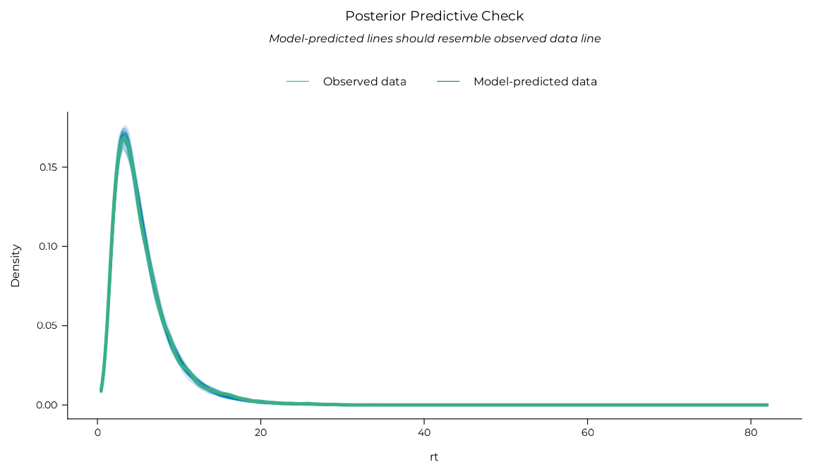
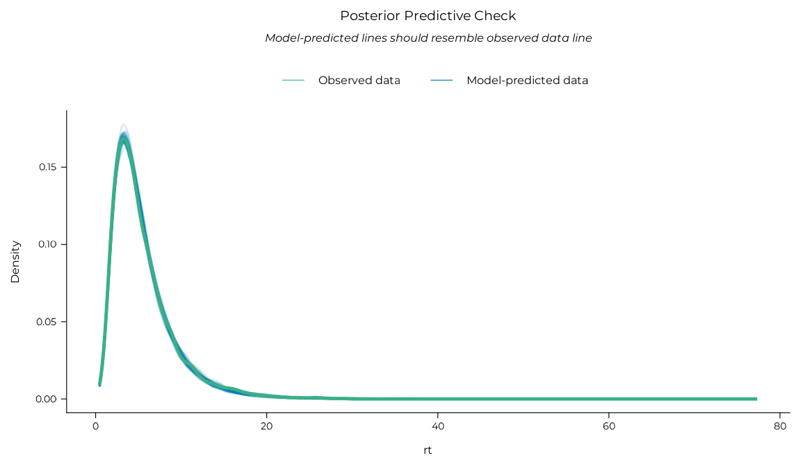
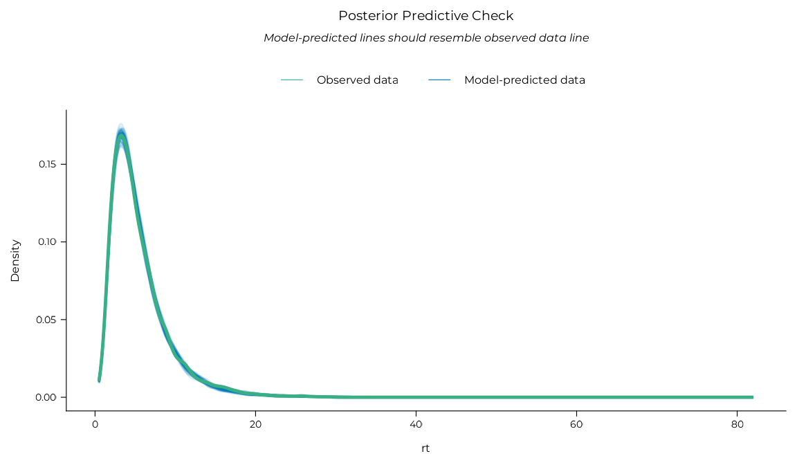
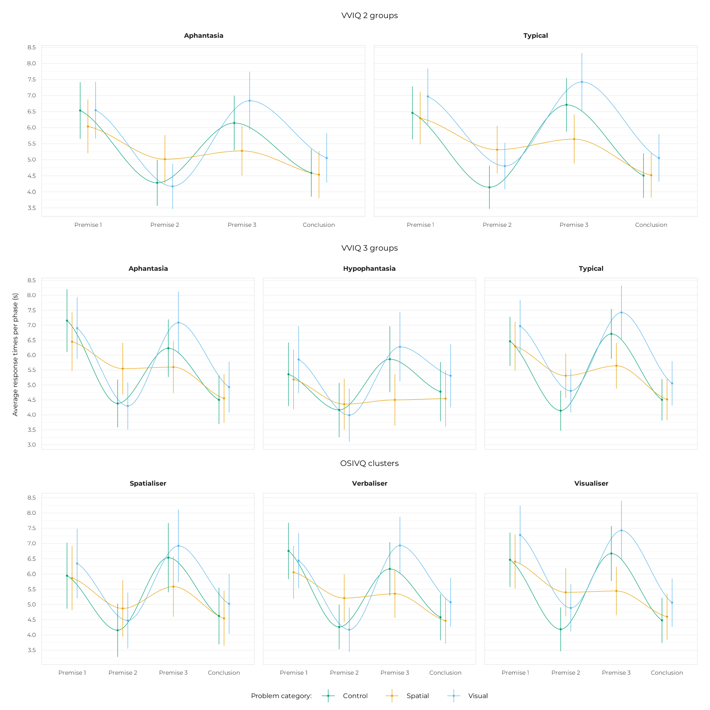

Exploring RTs per phase (non-linear modelling)
Source:vignettes/analysing_rt_nl.Rmd
analysing_rt_nl.RmdThis vignette contains a full breakdown of the exploratory non-linear modelling conducted to analyse the evolution of participants’ response times over the course of the trial phases. Indeed, in addition to the total response times per trial usually analysed in VIIE studies, we collected response time data for each trial phase (three premises and the conclusion). We explored whether the VIIE could be specific to certain phases, or whether it was a difference in the dynamics of reasoning across trial phases rather than an overall difference in speed, by modelling response times throughout a trial with non-linear models.
The non-linear modelling used here was heavily inspired by this tutorial by Ping Hei Yeung and this Stackoverflow thread. Only Bayesian analyses were reported in the manuscript for brevity, but equivalent frequentist analyses were also conducted to test the convergence of the two approaches on similar results. They are reported in this vignette alongside the Bayesian analyses for completeness.
library(aphantasiaReasoningViie)
#> Welcome to aphantasiaReasoningViie.
#> See https://osf.io/hfbcp/ for the associated study.Data preparation
First, let’s get the clean, analysis-ready and clustered data (see
vignette("preparing_data") and
vignette("osivq_clusters") for details) and filter trials
based on RTs (see vignette("analysing_rt") for
details).
df_rt <-
get_clustered_data("experiment") |>
filter_trials_on_rt() |>
dplyr::select(id:conclusion_rt)
dplyr::glimpse(df_rt)
#> Rows: 1,904
#> Columns: 15
#> $ id <fct> acdn247721443631359lzxb, acdn247721443631359lzxb, acdn2…
#> $ language <fct> fr, fr, fr, fr, fr, fr, fr, fr, fr, fr, fr, fr, fr, fr,…
#> $ group_4 <fct> Typical, Typical, Typical, Typical, Typical, Typical, T…
#> $ cluster <fct> Visualiser, Visualiser, Visualiser, Visualiser, Visuali…
#> $ group_2 <fct> Typical, Typical, Typical, Typical, Typical, Typical, T…
#> $ group_3 <fct> Typical, Typical, Typical, Typical, Typical, Typical, T…
#> $ strategy_group <fct> No_visual_strategy, No_visual_strategy, No_visual_strat…
#> $ expe_phase <fct> expe_block_1, expe_block_1, expe_block_1, expe_block_1,…
#> $ trial_number <int> 2, 5, 7, 8, 9, 11, 14, 15, 16, 17, 18, 19, 20, 21, 22, …
#> $ problem <int> 25, 1, 6, 9, 8, 5, 14, 17, 21, 12, 24, 3, 7, 22, 16, 4,…
#> $ category <fct> Control, Visual, Visual, Visual, Visual, Visual, Spatia…
#> $ premise_1_rt <dbl> 7.412, 5.773, 5.596, 4.378, 8.030, 3.038, 4.623, 6.415,…
#> $ premise_2_rt <dbl> 3.148, 1.559, 1.646, 7.822, 4.926, 2.881, 4.603, 2.603,…
#> $ premise_3_rt <dbl> 4.477, 9.679, 9.206, 3.674, 9.846, 8.729, 8.430, 5.320,…
#> $ conclusion_rt <dbl> 3.887, 4.760, 5.369, 4.631, 4.367, 7.507, 8.844, 2.512,…By default, the df_rt data frame has one variable (one
column) containing the response times of each participant for each trial
phase. We needed to have all of these phases (premises and conclusion)
in a single “phase” variable along with the associated “rt” variable for
modelling, so we gathered these four columns into two long columns by
“pivoting” the RT data in a long format (reducing the number of columns
and increasing the number of rows). This operation is performed by the
pivot_phases_longer() function.
We also needed to create “interaction” variables between the grouping
variables and the categories of the problems (visual, spatial, control)
using the base::interaction() function because
mgcv models used for non-linear modelling do not support
interaction terms natively.
df_rt_long <-
pivot_phases_longer(df_rt) |>
dplyr::mutate(
group_2_category = interaction(group_2, category),
group_3_category = interaction(group_3, category),
cluster_category = interaction(cluster, category)
)
dplyr::glimpse(df_rt_long)
#> Rows: 7,616
#> Columns: 17
#> $ id <fct> acdn247721443631359lzxb, acdn247721443631359lzxb, acd…
#> $ language <fct> fr, fr, fr, fr, fr, fr, fr, fr, fr, fr, fr, fr, fr, f…
#> $ group_4 <fct> Typical, Typical, Typical, Typical, Typical, Typical,…
#> $ cluster <fct> Visualiser, Visualiser, Visualiser, Visualiser, Visua…
#> $ group_2 <fct> Typical, Typical, Typical, Typical, Typical, Typical,…
#> $ group_3 <fct> Typical, Typical, Typical, Typical, Typical, Typical,…
#> $ strategy_group <fct> No_visual_strategy, No_visual_strategy, No_visual_str…
#> $ expe_phase <fct> expe_block_1, expe_block_1, expe_block_1, expe_block_…
#> $ trial_number <int> 2, 2, 2, 2, 5, 5, 5, 5, 7, 7, 7, 7, 8, 8, 8, 8, 9, 9,…
#> $ problem <fct> 25, 25, 25, 25, 1, 1, 1, 1, 6, 6, 6, 6, 9, 9, 9, 9, 8…
#> $ category <fct> Control, Control, Control, Control, Visual, Visual, V…
#> $ phase <dbl> 1, 2, 3, 4, 1, 2, 3, 4, 1, 2, 3, 4, 1, 2, 3, 4, 1, 2,…
#> $ phase_name <fct> Premise 1, Premise 2, Premise 3, Conclusion, Premise …
#> $ rt <dbl> 7.412, 3.148, 4.477, 3.887, 5.773, 1.559, 9.679, 4.76…
#> $ group_2_category <fct> Typical.Control, Typical.Control, Typical.Control, Ty…
#> $ group_3_category <fct> Typical.Control, Typical.Control, Typical.Control, Ty…
#> $ cluster_category <fct> Visualiser.Control, Visualiser.Control, Visualiser.Co…Method
We fitted generalised additive models using the brms package for Bayesian models (Bürkner, 2017) or the mgcv package (Wood, 2011) to predict response times with a grouping variable (VVIQ groups, OSIVQ clusters), Category (visual, spatial or control) and their interaction as fixed categorical predictors, as well as “smooth” (non-linear) terms that capture the evolution of RTs across trial phases (premise 1/2/3 and conclusion) for each grouping and category and each participant (the latter two being equivalent to a “random intercept” in mixed models).
Let’s break this down.
Grouping variables
We used several grouping variables to classify participants, all of
which are in the df_rt_long data frame:
group_4is the 4-group VVIQ classification with an “aphantasia” group (VVIQ = 16), “hypophantasia” group (VVIQ [17, 32]), “typical” group (VVIQ [33, 74]), and “hyperphantasia” group (VVIQ [75, 80]). It was not used in the analyses because the hyperphantasia group was too small (N = 4).group_3is the same asgroup, but with the hyperphantasia group merged with the typical group. It is referred to as “VVIQ 3 groups” in the manuscript results.group_2is the binary classification often used in aphantasia literature that additionally merges the hypophantasia group with the aphantasia group. It is refereed to as “VVIQ 2 groups” in the manuscript results.clusteris the cognitive style classification obtained from clustering OSIVQ scores. It contains three groups: “Visualiser”, “Spatialiser”, and “Verbaliser”. It is referred to as “OSIVQ 3 clusters” in the manuscript results.
The same modelling pipeline was therefore applied three times, once for each of the last three grouping variables.
Bayesian models
Bayesian models were fitted using the brms::brm()
function through a custom wrapper, fit_brms_model(), that
sets several default options for us. 24000 post-warmup iterations were
spread across all available CPU for parallel processing1, with 2000 additional
warmup iterations per chain. A fixed seed was used for reproducibility.
The CmdStanR back-end was
used for better performance. CmdStanR needs a special installation
command which is provided in the next chunk if needed. Regularising
priors coefficients were used to improve convergence and avoid
overfitting. A normal prior with mean 0 and standard deviation 1 was
used on the fixed effects, an exponential prior with rate 1 on the
standard deviation of the random effects, and an exponential prior with
rate 1 on the residual standard deviation. The fine tuning of these
priors was done based on prior predictive checks (see
vignette("osivq_clusters") for details). To avoid having to
refit the models each time the vignette is built and improve
reproducibility, fitted models (which took more than 6 hours per model
on 24 cores) are saved in the vignettes/models folder and
loaded in the R chunks.
Finally, we tested our hypotheses on group and category differences
with marginal contrasts. This task was performed with functions from the
marginaleffects package. We used the
marginaleffects::avg_comparisons() function to compute
contrasts and a custom report_rope() wrapper (around
marginaleffects::posterior_draws(),
bayestestR::rope_range() and
bayestestR::p_direction()) to summarise their posterior
distributions. We computed the probability of direction (PD) of the
contrasts and the proportions of their posterior distributions below,
inside or above a region of practical equivalence to the null (ROPE)
(see Makowski et al., 2019).
The setup of the CmdStanR back-end, marginaleffects options and the model priors is done in the chunk below.
# if(!requireNamespace("cmdstanr", quietly = TRUE)) {
# install.packages(
# "cmdstanr",
# repos = c('https://stan-dev.r-universe.dev', getOption("repos"))
# )
# }
options("marginaleffects_safe" = FALSE)
draws <- seq(1, 2000, 1) # To limit draws that will be used for marginaleffects
prior_nl <- c(
brms::prior(normal(0, 1), class = "b"),
brms::prior(exponential(1), class = "sds"),
brms::prior(exponential(1), class = "sigma")
)Frequentist models
The models were fitted using the mgcv::bam() function.
After model fit, we tested group and category differences with marginal
contrasts. This task was performed with the get_contrast()
function, which is a wrapper around several functions from the
emmeans package.
These models took a long time to fit and needed to be saved for ease of reuse, but model fits were too heavy to be kept as package data (more than 100 MB). Thus, two sub-products of the models were saved as package data instead:
Contrast analyses obtained with
get_contrast()for the statistical tests. The analyses for the three grouping variables have been saved in thenl_contrastslist.Model predictions obtained with
modelbased::estimate_relation()for the data used for visualisation. The predictions for the three grouping variables have been saved in thenl_predictionslist.
The code to fit the frequentist models and get the contrasts is provided below but does not run.
Results
VVIQ 2 groups
Bayesian
mb_nl_vviq_2 <-
fit_brms_model(
formula = rt ~
group_2 * category +
s(phase, by = interaction(group_2, category), k = 4) +
s(phase, id, bs = "fs", m = 1, k = 4),
data = df_rt_long,
family = brms::shifted_lognormal(),
prior = prior_nl,
refresh = 10,
file = "models/m_nl_vviq_2.rds"
)
# Posterior predictive check (best model performance indicator)
mb_nl_vviq_2 |>
performance::check_predictions() |> plot() + theme_pdf(base_size = 12)
# Contrasts
marginaleffects::avg_comparisons(
mb_nl_vviq_2,
variables = list("category" = "pairwise"),
by = c("group_2", "phase"),
draw_ids = draws
) |>
report_rope(phase, group_2, contrast) |> knitr::kable()| phase | group_2 | contrast | Estimate | 95% CI | PD | Below ROPE | Inside ROPE | Above ROPE |
|---|---|---|---|---|---|---|---|---|
| 1 | Aphantasia | Spatial - Control | -0.049 | [-0.549, 0.436] | 0.572 | 0.102 | 0.849 | 0.050 |
| 1 | Aphantasia | Visual - Control | 0.242 | [-0.258, 0.776] | 0.821 | 0.009 | 0.688 | 0.304 |
| 1 | Aphantasia | Visual - Spatial | 0.292 | [-0.22, 0.777] | 0.875 | 0.005 | 0.617 | 0.378 |
| 1 | Typical | Spatial - Control | -0.042 | [-0.476, 0.431] | 0.565 | 0.079 | 0.873 | 0.048 |
| 1 | Typical | Visual - Control | 0.524 | [0.031, 1.032] | 0.983 | 0.000 | 0.276 | 0.724 |
| 1 | Typical | Visual - Spatial | 0.555 | [0.074, 1.049] | 0.988 | 0.000 | 0.224 | 0.775 |
| 2 | Aphantasia | Spatial - Control | 0.712 | [0.35, 1.085] | 1.000 | 0.000 | 0.034 | 0.966 |
| 2 | Aphantasia | Visual - Control | 0.021 | [-0.325, 0.359] | 0.547 | 0.015 | 0.965 | 0.020 |
| 2 | Aphantasia | Visual - Spatial | -0.694 | [-1.052, -0.349] | 1.000 | 0.966 | 0.034 | 0.000 |
| 2 | Typical | Spatial - Control | 1.066 | [0.717, 1.391] | 1.000 | 0.000 | 0.000 | 1.000 |
| 2 | Typical | Visual - Control | 0.476 | [0.192, 0.795] | 0.997 | 0.000 | 0.240 | 0.759 |
| 2 | Typical | Visual - Spatial | -0.585 | [-0.933, -0.227] | 0.999 | 0.882 | 0.117 | 0.000 |
| 3 | Aphantasia | Spatial - Control | -0.648 | [-1.101, -0.216] | 0.998 | 0.897 | 0.103 | 0.000 |
| 3 | Aphantasia | Visual - Control | 0.656 | [0.175, 1.147] | 0.997 | 0.000 | 0.139 | 0.861 |
| 3 | Aphantasia | Visual - Spatial | 1.307 | [0.84, 1.763] | 1.000 | 0.000 | 0.000 | 1.000 |
| 3 | Typical | Spatial - Control | -0.967 | [-1.411, -0.495] | 1.000 | 0.995 | 0.005 | 0.000 |
| 3 | Typical | Visual - Control | 0.495 | [0.003, 1.01] | 0.975 | 0.000 | 0.308 | 0.692 |
| 3 | Typical | Visual - Spatial | 1.462 | [0.982, 1.899] | 1.000 | 0.000 | 0.000 | 1.000 |
| 4 | Aphantasia | Spatial - Control | -0.033 | [-0.408, 0.333] | 0.574 | 0.042 | 0.942 | 0.016 |
| 4 | Aphantasia | Visual - Control | 0.470 | [0.053, 0.873] | 0.988 | 0.000 | 0.290 | 0.710 |
| 4 | Aphantasia | Visual - Spatial | 0.500 | [0.12, 0.899] | 0.995 | 0.000 | 0.238 | 0.761 |
| 4 | Typical | Spatial - Control | -0.095 | [-0.43, 0.241] | 0.719 | 0.060 | 0.938 | 0.002 |
| 4 | Typical | Visual - Control | 0.341 | [0.005, 0.686] | 0.976 | 0.000 | 0.560 | 0.439 |
| 4 | Typical | Visual - Spatial | 0.443 | [0.07, 0.8] | 0.991 | 0.000 | 0.345 | 0.655 |
Frequentist
Note that the frequentist models were fitted with an earlier version
of the package when the term variable was used instead of
phase. The code below reflects this older version for
consistency with the saved contrasts. Replacing term with
phase would not change the results (but would be required
to refit the models).
mf_nl_vviq_2 <-
mgcv::bam(
formula = rt ~
group_2_category +
s(term, by = group_2_category, bs = "tp", k = 4) +
s(term, id, bs = "fs", m = 1, k = 4),
family = Gamma(link = "identity"),
data = df_rt_long,
method = "fREML"
)
contrasts_vviq_2 <-
mf_nl_vviq_2 |>
get_contrast(
~ group_2_category | term,
at = list(term = c(1, 2, 3, 4)),
interaction = FALSE,
adjust = "none"
)The chunk above does not run, but the contrasts can be accessed
natively in the package in the nl_contrasts object. The
code below tweaks them a bit for a prettier display:
nl_contrasts$vviq_2 |>
as.data.frame() |>
tidyr::separate_wider_delim(
contrast, " - ", names = c("group_cat_1", "group_cat_2")
) |>
tidyr::separate_wider_delim(
group_cat_1, ".", names = c("group_1", "category_1")
) |>
tidyr::separate_wider_delim(
group_cat_2, ".", names = c("group_2", "category_2")
) |>
dplyr::filter(group_1 == group_2 & p.value < 1) |>
dplyr::select(!c(
tidyselect::contains("group_2"),
tidyselect::contains("cluster_2"),
tidyselect::contains("SE"),
tidyselect::contains("df")
)) |>
dplyr::mutate(across(c(estimate:p.value), ~round(., 3))) |>
tidyr::unite(`Category contrast`, category_1, category_2, sep = " - ") |>
dplyr::rename(group = group_1, `RT difference` = estimate) |>
dplyr::arrange(term, group) |>
dplyr::mutate(
term = term |>
as.character() |>
dplyr::case_match(
"1" ~ "Premise 1",
"2" ~ "Premise 2",
"3" ~ "Premise 3",
"4" ~ "Conclusion"
),
) |>
knitr::kable(digits = 3)| group | Category contrast | term | RT difference | t.ratio | p.value |
|---|---|---|---|---|---|
| Aphantasia | Control - Spatial | Premise 1 | 0.239 | 0.495 | 0.621 |
| Aphantasia | Control - Visual | Premise 1 | -0.095 | -0.185 | 0.853 |
| Aphantasia | Spatial - Visual | Premise 1 | -0.334 | -0.668 | 0.504 |
| Typical | Control - Spatial | Premise 1 | 0.028 | 0.061 | 0.951 |
| Typical | Control - Visual | Premise 1 | -0.656 | -1.323 | 0.186 |
| Typical | Spatial - Visual | Premise 1 | -0.685 | -1.409 | 0.159 |
| Aphantasia | Control - Spatial | Premise 2 | -0.681 | -1.707 | 0.088 |
| Aphantasia | Control - Visual | Premise 2 | -0.015 | -0.037 | 0.971 |
| Aphantasia | Spatial - Visual | Premise 2 | 0.666 | 1.610 | 0.107 |
| Typical | Control - Spatial | Premise 2 | -1.177 | -3.070 | 0.002 |
| Typical | Control - Visual | Premise 2 | -0.573 | -1.448 | 0.148 |
| Typical | Spatial - Visual | Premise 2 | 0.604 | 1.511 | 0.131 |
| Aphantasia | Control - Spatial | Premise 3 | 0.561 | 1.341 | 0.180 |
| Aphantasia | Control - Visual | Premise 3 | -0.765 | -1.704 | 0.088 |
| Aphantasia | Spatial - Visual | Premise 3 | -1.327 | -3.015 | 0.003 |
| Typical | Control - Spatial | Premise 3 | 0.850 | 2.104 | 0.035 |
| Typical | Control - Visual | Premise 3 | -0.586 | -1.354 | 0.176 |
| Typical | Spatial - Visual | Premise 3 | -1.436 | -3.398 | 0.001 |
| Aphantasia | Control - Spatial | Conclusion | -0.069 | -0.152 | 0.879 |
| Aphantasia | Control - Visual | Conclusion | -0.598 | -1.226 | 0.220 |
| Aphantasia | Spatial - Visual | Conclusion | -0.529 | -1.113 | 0.266 |
| Typical | Control - Spatial | Conclusion | -0.072 | -0.164 | 0.870 |
| Typical | Control - Visual | Conclusion | -0.472 | -1.004 | 0.315 |
| Typical | Spatial - Visual | Conclusion | -0.400 | -0.869 | 0.385 |
Let’s do the same for the other two classifications.
VVIQ 3 groups
Bayesian
mb_nl_vviq_3 <-
fit_brms_model(
formula = rt ~
group_3 * category +
s(phase, by = interaction(group_3, category), k = 4) +
s(phase, id, bs = "fs", m = 1, k = 4),
data = df_rt_long,
family = brms::shifted_lognormal(),
prior = prior_nl,
refresh = 10,
file = "models/m_nl_vviq_3.rds"
)
# Posterior predictive check (best model performance indicator)
mb_nl_vviq_3 |>
performance::check_predictions() |> plot() + theme_pdf(base_size = 12)
# Contrasts
marginaleffects::avg_comparisons(
mb_nl_vviq_3,
variables = list("category" = "pairwise"),
by = c("group_3", "phase"),
draw_ids = draws
) |>
report_rope(phase, group_3, contrast) |> knitr::kable()| phase | group_3 | contrast | Estimate | 95% CI | PD | Below ROPE | Inside ROPE | Above ROPE |
|---|---|---|---|---|---|---|---|---|
| 1 | Aphantasia | Spatial - Control | -0.198 | [-0.848, 0.501] | 0.721 | 0.312 | 0.630 | 0.058 |
| 1 | Aphantasia | Visual - Control | -0.009 | [-0.702, 0.66] | 0.508 | 0.152 | 0.716 | 0.132 |
| 1 | Aphantasia | Visual - Spatial | 0.179 | [-0.483, 0.863] | 0.700 | 0.048 | 0.664 | 0.288 |
| 1 | Hypophantasia | Spatial - Control | 0.354 | [-0.372, 1.078] | 0.825 | 0.026 | 0.495 | 0.478 |
| 1 | Hypophantasia | Visual - Control | 0.576 | [-0.162, 1.34] | 0.944 | 0.005 | 0.280 | 0.715 |
| 1 | Hypophantasia | Visual - Spatial | 0.234 | [-0.494, 0.989] | 0.715 | 0.055 | 0.580 | 0.365 |
| 1 | Typical | Spatial - Control | -0.022 | [-0.467, 0.445] | 0.538 | 0.072 | 0.875 | 0.052 |
| 1 | Typical | Visual - Control | 0.536 | [0.031, 1.015] | 0.983 | 0.000 | 0.253 | 0.747 |
| 1 | Typical | Visual - Spatial | 0.561 | [0.048, 1.041] | 0.982 | 0.000 | 0.236 | 0.764 |
| 2 | Aphantasia | Spatial - Control | 0.773 | [0.335, 1.224] | 1.000 | 0.000 | 0.038 | 0.962 |
| 2 | Aphantasia | Visual - Control | 0.049 | [-0.403, 0.489] | 0.576 | 0.036 | 0.890 | 0.074 |
| 2 | Aphantasia | Visual - Spatial | -0.733 | [-1.155, -0.289] | 0.998 | 0.941 | 0.060 | 0.000 |
| 2 | Hypophantasia | Spatial - Control | 0.282 | [-0.223, 0.797] | 0.864 | 0.004 | 0.625 | 0.370 |
| 2 | Hypophantasia | Visual - Control | -0.031 | [-0.532, 0.488] | 0.552 | 0.086 | 0.850 | 0.064 |
| 2 | Hypophantasia | Visual - Spatial | -0.315 | [-0.801, 0.19] | 0.882 | 0.415 | 0.579 | 0.006 |
| 2 | Typical | Spatial - Control | 1.058 | [0.718, 1.38] | 1.000 | 0.000 | 0.000 | 1.000 |
| 2 | Typical | Visual - Control | 0.482 | [0.163, 0.787] | 1.000 | 0.000 | 0.250 | 0.750 |
| 2 | Typical | Visual - Spatial | -0.574 | [-0.921, -0.22] | 1.000 | 0.871 | 0.130 | 0.000 |
| 3 | Aphantasia | Spatial - Control | -0.483 | [-1.043, 0.068] | 0.955 | 0.659 | 0.338 | 0.002 |
| 3 | Aphantasia | Visual - Control | 0.718 | [0.091, 1.384] | 0.986 | 0.000 | 0.142 | 0.857 |
| 3 | Aphantasia | Visual - Spatial | 1.198 | [0.618, 1.795] | 1.000 | 0.000 | 0.002 | 0.999 |
| 3 | Hypophantasia | Spatial - Control | -0.440 | [-1.085, 0.158] | 0.926 | 0.583 | 0.413 | 0.004 |
| 3 | Hypophantasia | Visual - Control | 0.538 | [-0.174, 1.218] | 0.925 | 0.008 | 0.316 | 0.676 |
| 3 | Hypophantasia | Visual - Spatial | 0.982 | [0.31, 1.633] | 0.997 | 0.000 | 0.034 | 0.966 |
| 3 | Typical | Spatial - Control | -0.959 | [-1.387, -0.533] | 1.000 | 0.997 | 0.003 | 0.000 |
| 3 | Typical | Visual - Control | 0.491 | [0.009, 0.989] | 0.977 | 0.000 | 0.322 | 0.677 |
| 3 | Typical | Visual - Spatial | 1.452 | [0.967, 1.918] | 1.000 | 0.000 | 0.000 | 1.000 |
| 4 | Aphantasia | Spatial - Control | -0.022 | [-0.488, 0.431] | 0.540 | 0.068 | 0.885 | 0.047 |
| 4 | Aphantasia | Visual - Control | 0.378 | [-0.085, 0.822] | 0.940 | 0.002 | 0.480 | 0.518 |
| 4 | Aphantasia | Visual - Spatial | 0.398 | [-0.05, 0.841] | 0.958 | 0.000 | 0.452 | 0.547 |
| 4 | Hypophantasia | Spatial - Control | -0.227 | [-0.864, 0.379] | 0.758 | 0.338 | 0.635 | 0.026 |
| 4 | Hypophantasia | Visual - Control | 0.697 | [0.03, 1.387] | 0.983 | 0.002 | 0.169 | 0.830 |
| 4 | Hypophantasia | Visual - Spatial | 0.917 | [0.311, 1.595] | 0.997 | 0.000 | 0.041 | 0.959 |
| 4 | Typical | Spatial - Control | -0.098 | [-0.425, 0.228] | 0.723 | 0.058 | 0.942 | 0.001 |
| 4 | Typical | Visual - Control | 0.333 | [-0.016, 0.687] | 0.968 | 0.000 | 0.579 | 0.421 |
| 4 | Typical | Visual - Spatial | 0.437 | [0.074, 0.8] | 0.993 | 0.000 | 0.354 | 0.646 |
Frequentist
mf_nl_vviq_3 <-
mgcv::bam(
formula = rt ~
group_3_category +
s(term, by = group_3_category, bs = "tp", k = 4) +
s(term, id, bs = "fs", m = 1, k = 4),
family = Gamma(link = "identity"),
data = df_rt_long,
method = "fREML"
)
contrasts_vviq_3 <-
mf_nl_vviq_3 |>
get_contrast(
~ group_3_category | term,
at = list(term = c(1, 2, 3, 4)),
interaction = FALSE,
adjust = "none"
)Same process as above, contrasts are saved in the package:
nl_contrasts$vviq_3 |>
as.data.frame() |>
tidyr::separate_wider_delim(
contrast, " - ", names = c("group_cat_1", "group_cat_2")
) |>
tidyr::separate_wider_delim(
group_cat_1, ".", names = c("group_1", "category_1")
) |>
tidyr::separate_wider_delim(
group_cat_2, ".", names = c("group_2", "category_2")
) |>
dplyr::filter(group_1 == group_2 & p.value < 1) |>
dplyr::select(!c(
tidyselect::contains("group_2"),
tidyselect::contains("cluster_2"),
tidyselect::contains("SE"),
tidyselect::contains("df")
)) |>
dplyr::mutate(across(c(estimate:p.value), ~round(., 3))) |>
tidyr::unite(`Category contrast`, category_1, category_2, sep = " - ") |>
dplyr::rename(group = group_1, `RT difference` = estimate) |>
dplyr::arrange(term, group) |>
dplyr::mutate(
term = term |>
as.character() |>
dplyr::case_match(
"1" ~ "Premise 1",
"2" ~ "Premise 2",
"3" ~ "Premise 3",
"4" ~ "Conclusion"
),
) |>
knitr::kable(digits = 3)| group | Category contrast | term | RT difference | t.ratio | p.value |
|---|---|---|---|---|---|
| Aphantasia | Control - Spatial | Premise 1 | 0.464 | 0.782 | 0.434 |
| Aphantasia | Control - Visual | Premise 1 | 0.135 | 0.212 | 0.832 |
| Aphantasia | Spatial - Visual | Premise 1 | -0.329 | -0.534 | 0.593 |
| Hypophantasia | Control - Spatial | Premise 1 | -0.058 | -0.083 | 0.934 |
| Hypophantasia | Control - Visual | Premise 1 | -0.494 | -0.645 | 0.519 |
| Hypophantasia | Spatial - Visual | Premise 1 | -0.436 | -0.587 | 0.557 |
| Typical | Control - Spatial | Premise 1 | 0.029 | 0.063 | 0.950 |
| Typical | Control - Visual | Premise 1 | -0.659 | -1.331 | 0.183 |
| Typical | Spatial - Visual | Premise 1 | -0.688 | -1.418 | 0.156 |
| Aphantasia | Control - Spatial | Premise 2 | -0.984 | -2.026 | 0.043 |
| Aphantasia | Control - Visual | Premise 2 | -0.099 | -0.197 | 0.844 |
| Aphantasia | Spatial - Visual | Premise 2 | 0.885 | 1.745 | 0.081 |
| Hypophantasia | Control - Spatial | Premise 2 | -0.328 | -0.554 | 0.580 |
| Hypophantasia | Control - Visual | Premise 2 | 0.097 | 0.155 | 0.877 |
| Hypophantasia | Spatial - Visual | Premise 2 | 0.425 | 0.685 | 0.493 |
| Typical | Control - Spatial | Premise 2 | -1.176 | -3.088 | 0.002 |
| Typical | Control - Visual | Premise 2 | -0.574 | -1.456 | 0.145 |
| Typical | Spatial - Visual | Premise 2 | 0.601 | 1.508 | 0.132 |
| Aphantasia | Control - Spatial | Premise 3 | 0.435 | 0.842 | 0.400 |
| Aphantasia | Control - Visual | Premise 3 | -0.828 | -1.486 | 0.137 |
| Aphantasia | Spatial - Visual | Premise 3 | -1.263 | -2.313 | 0.021 |
| Hypophantasia | Control - Spatial | Premise 3 | 0.785 | 1.287 | 0.198 |
| Hypophantasia | Control - Visual | Premise 3 | -0.648 | -0.961 | 0.337 |
| Hypophantasia | Spatial - Visual | Premise 3 | -1.434 | -2.202 | 0.028 |
| Typical | Control - Spatial | Premise 3 | 0.851 | 2.120 | 0.034 |
| Typical | Control - Visual | Premise 3 | -0.587 | -1.358 | 0.175 |
| Typical | Spatial - Visual | Premise 3 | -1.438 | -3.412 | 0.001 |
| Aphantasia | Control - Spatial | Conclusion | -0.159 | -0.295 | 0.768 |
| Aphantasia | Control - Visual | Conclusion | -0.535 | -0.913 | 0.361 |
| Aphantasia | Spatial - Visual | Conclusion | -0.376 | -0.657 | 0.511 |
| Hypophantasia | Control - Spatial | Conclusion | 0.111 | 0.164 | 0.869 |
| Hypophantasia | Control - Visual | Conclusion | -0.682 | -0.910 | 0.363 |
| Hypophantasia | Spatial - Visual | Conclusion | -0.794 | -1.097 | 0.273 |
| Typical | Control - Spatial | Conclusion | -0.070 | -0.160 | 0.873 |
| Typical | Control - Visual | Conclusion | -0.473 | -1.009 | 0.313 |
| Typical | Spatial - Visual | Conclusion | -0.403 | -0.877 | 0.381 |
OSIVQ 3 clusters
Bayesian
mb_nl_osivq <-
fit_brms_model(
formula = rt ~
cluster * category +
s(phase, by = interaction(cluster, category), k = 4) +
s(phase, id, bs = "fs", m = 1, k = 4),
data = df_rt_long,
family = brms::shifted_lognormal(),
prior = prior_nl,
refresh = 10,
file = "models/m_nl_osivq.rds"
)
# Posterior predictive check (best model performance indicator)
mb_nl_osivq |>
performance::check_predictions() |> plot() + theme_pdf(base_size = 12)
# Contrasts
marginaleffects::avg_comparisons(
mb_nl_osivq,
variables = list("category" = "pairwise"),
by = c("cluster", "phase"),
draw_ids = draws
) |>
report_rope(phase, cluster, contrast) |> knitr::kable()| phase | cluster | contrast | Estimate | 95% CI | PD | Below ROPE | Inside ROPE | Above ROPE |
|---|---|---|---|---|---|---|---|---|
| 1 | Visualiser | Spatial - Control | 0.152 | [-0.384, 0.711] | 0.714 | 0.028 | 0.759 | 0.214 |
| 1 | Visualiser | Visual - Control | 0.874 | [0.304, 1.458] | 0.998 | 0.000 | 0.042 | 0.959 |
| 1 | Visualiser | Visual - Spatial | 0.717 | [0.138, 1.311] | 0.994 | 0.000 | 0.120 | 0.880 |
| 1 | Spatialiser | Spatial - Control | 0.167 | [-0.555, 0.88] | 0.673 | 0.082 | 0.632 | 0.286 |
| 1 | Spatialiser | Visual - Control | 0.163 | [-0.556, 0.93] | 0.666 | 0.078 | 0.627 | 0.295 |
| 1 | Spatialiser | Visual - Spatial | 0.003 | [-0.76, 0.771] | 0.505 | 0.165 | 0.669 | 0.166 |
| 1 | Verbaliser | Spatial - Control | -0.238 | [-0.777, 0.27] | 0.811 | 0.311 | 0.680 | 0.009 |
| 1 | Verbaliser | Visual - Control | 0.031 | [-0.504, 0.605] | 0.557 | 0.066 | 0.817 | 0.117 |
| 1 | Verbaliser | Visual - Spatial | 0.272 | [-0.254, 0.808] | 0.846 | 0.009 | 0.636 | 0.356 |
| 2 | Visualiser | Spatial - Control | 1.109 | [0.753, 1.468] | 1.000 | 0.000 | 0.000 | 1.000 |
| 2 | Visualiser | Visual - Control | 0.572 | [0.218, 0.935] | 1.000 | 0.000 | 0.130 | 0.870 |
| 2 | Visualiser | Visual - Spatial | -0.537 | [-0.907, -0.161] | 0.995 | 0.799 | 0.200 | 0.000 |
| 2 | Spatialiser | Spatial - Control | 0.522 | [-0.001, 1.015] | 0.975 | 0.002 | 0.280 | 0.719 |
| 2 | Spatialiser | Visual - Control | 0.188 | [-0.362, 0.728] | 0.772 | 0.023 | 0.712 | 0.266 |
| 2 | Spatialiser | Visual - Spatial | -0.323 | [-0.848, 0.209] | 0.871 | 0.444 | 0.551 | 0.005 |
| 2 | Verbaliser | Spatial - Control | 0.746 | [0.353, 1.105] | 1.000 | 0.000 | 0.028 | 0.972 |
| 2 | Verbaliser | Visual - Control | 0.023 | [-0.346, 0.371] | 0.545 | 0.020 | 0.952 | 0.028 |
| 2 | Verbaliser | Visual - Spatial | -0.732 | [-1.112, -0.348] | 1.000 | 0.970 | 0.030 | 0.000 |
| 3 | Visualiser | Spatial - Control | -0.940 | [-1.408, -0.458] | 1.000 | 0.991 | 0.010 | 0.000 |
| 3 | Visualiser | Visual - Control | 0.640 | [0.05, 1.191] | 0.984 | 0.000 | 0.167 | 0.833 |
| 3 | Visualiser | Visual - Spatial | 1.572 | [1.06, 2.116] | 1.000 | 0.000 | 0.000 | 1.000 |
| 3 | Spatialiser | Spatial - Control | -0.638 | [-1.332, 0.032] | 0.968 | 0.768 | 0.230 | 0.002 |
| 3 | Spatialiser | Visual - Control | 0.061 | [-0.696, 0.815] | 0.566 | 0.130 | 0.649 | 0.220 |
| 3 | Spatialiser | Visual - Spatial | 0.706 | [0.031, 1.404] | 0.983 | 0.000 | 0.170 | 0.830 |
| 3 | Verbaliser | Spatial - Control | -0.582 | [-1.048, -0.121] | 0.993 | 0.839 | 0.162 | 0.000 |
| 3 | Verbaliser | Visual - Control | 0.696 | [0.155, 1.258] | 0.994 | 0.000 | 0.118 | 0.881 |
| 3 | Verbaliser | Visual - Spatial | 1.287 | [0.8, 1.776] | 1.000 | 0.000 | 0.000 | 1.000 |
| 4 | Visualiser | Spatial - Control | -0.083 | [-0.453, 0.279] | 0.661 | 0.067 | 0.925 | 0.007 |
| 4 | Visualiser | Visual - Control | 0.353 | [-0.045, 0.737] | 0.956 | 0.000 | 0.532 | 0.468 |
| 4 | Visualiser | Visual - Spatial | 0.436 | [0.023, 0.822] | 0.982 | 0.000 | 0.370 | 0.629 |
| 4 | Spatialiser | Spatial - Control | -0.219 | [-0.815, 0.325] | 0.788 | 0.312 | 0.672 | 0.016 |
| 4 | Spatialiser | Visual - Control | 0.188 | [-0.43, 0.812] | 0.730 | 0.040 | 0.677 | 0.282 |
| 4 | Spatialiser | Visual - Spatial | 0.414 | [-0.157, 1.02] | 0.917 | 0.001 | 0.437 | 0.562 |
| 4 | Verbaliser | Spatial - Control | -0.081 | [-0.442, 0.283] | 0.660 | 0.074 | 0.918 | 0.009 |
| 4 | Verbaliser | Visual - Control | 0.537 | [0.123, 0.944] | 0.995 | 0.000 | 0.210 | 0.789 |
| 4 | Verbaliser | Visual - Spatial | 0.621 | [0.229, 1.008] | 0.999 | 0.000 | 0.116 | 0.884 |
Frequentist
mf_nl_osivq <-
mgcv::bam(
formula = rt ~
cluster_category +
s(term, by = cluster_category, bs = "tp", k = 4) +
s(term, id, bs = "fs", m = 1, k = 4),
family = Gamma(link = "identity"),
data = df_rt_long,
method = "fREML"
)
contrasts_osivq <-
mf_nl_osivq |>
get_contrast(
~ cluster_category | term,
at = list(term = c(1, 2, 3, 4)),
interaction = TRUE
)Same process as above, contrasts are saved in the package:
nl_contrasts$osivq |>
as.data.frame() |>
tidyr::separate_wider_delim(
cluster_category_pairwise, " - ", names = c("cluster_cat_1", "cluster_cat_2")
) |>
tidyr::separate_wider_delim(
cluster_cat_1, ".", names = c("cluster_1", "category_1")
) |>
tidyr::separate_wider_delim(
cluster_cat_2, ".", names = c("cluster_2", "category_2")
) |>
dplyr::filter(cluster_1 == cluster_2 & p.value < 1) |>
dplyr::select(!c(
tidyselect::contains("group_2"),
tidyselect::contains("cluster_2"),
tidyselect::contains("SE"),
tidyselect::contains("df")
)) |>
dplyr::mutate(across(c(estimate:p.value), ~round(., 3))) |>
tidyr::unite(`Category contrast`, category_1, category_2, sep = " - ") |>
dplyr::rename(cluster = cluster_1, `RT difference` = estimate) |>
dplyr::arrange(term, cluster) |>
dplyr::mutate(
term = dplyr::case_match(
term,
1 ~ "Premise 1",
2 ~ "Premise 2",
3 ~ "Premise 3",
4 ~ "Conclusion"
),
) |>
knitr::kable(digits = 3)| cluster | Category contrast | term | RT difference | t.ratio | p.value |
|---|---|---|---|---|---|
| Spatialiser | Control - Spatial | Premise 1 | 0.157 | 0.229 | 0.819 |
| Spatialiser | Control - Visual | Premise 1 | -0.297 | -0.399 | 0.690 |
| Spatialiser | Spatial - Visual | Premise 1 | -0.454 | -0.633 | 0.527 |
| Verbaliser | Control - Spatial | Premise 1 | 0.447 | 0.867 | 0.386 |
| Verbaliser | Control - Visual | Premise 1 | 0.164 | 0.299 | 0.765 |
| Verbaliser | Spatial - Visual | Premise 1 | -0.283 | -0.533 | 0.594 |
| Visualiser | Control - Spatial | Premise 1 | -0.158 | -0.301 | 0.763 |
| Visualiser | Control - Visual | Premise 1 | -0.993 | -1.766 | 0.077 |
| Visualiser | Spatial - Visual | Premise 1 | -0.835 | -1.514 | 0.130 |
| Spatialiser | Control - Spatial | Premise 2 | -0.681 | -1.172 | 0.241 |
| Spatialiser | Control - Visual | Premise 2 | -0.435 | -0.714 | 0.475 |
| Spatialiser | Spatial - Visual | Premise 2 | 0.245 | 0.402 | 0.688 |
| Verbaliser | Control - Spatial | Premise 2 | -0.786 | -1.862 | 0.063 |
| Verbaliser | Control - Visual | Premise 2 | -0.012 | -0.028 | 0.978 |
| Verbaliser | Spatial - Visual | Premise 2 | 0.774 | 1.769 | 0.077 |
| Visualiser | Control - Spatial | Premise 2 | -1.288 | -3.001 | 0.003 |
| Visualiser | Control - Visual | Premise 2 | -0.562 | -1.267 | 0.205 |
| Visualiser | Spatial - Visual | Premise 2 | 0.726 | 1.623 | 0.105 |
| Spatialiser | Control - Spatial | Premise 3 | 0.600 | 0.983 | 0.326 |
| Spatialiser | Control - Visual | Premise 3 | -0.346 | -0.528 | 0.597 |
| Spatialiser | Spatial - Visual | Premise 3 | -0.946 | -1.483 | 0.138 |
| Verbaliser | Control - Spatial | Premise 3 | 0.539 | 1.215 | 0.224 |
| Verbaliser | Control - Visual | Premise 3 | -0.785 | -1.649 | 0.099 |
| Verbaliser | Spatial - Visual | Premise 3 | -1.324 | -2.834 | 0.005 |
| Visualiser | Control - Spatial | Premise 3 | 1.003 | 2.212 | 0.027 |
| Visualiser | Control - Visual | Premise 3 | -0.693 | -1.409 | 0.159 |
| Visualiser | Spatial - Visual | Premise 3 | -1.696 | -3.565 | 0.000 |
| Spatialiser | Control - Spatial | Conclusion | 0.069 | 0.105 | 0.916 |
| Spatialiser | Control - Visual | Conclusion | -0.406 | -0.571 | 0.568 |
| Spatialiser | Spatial - Visual | Conclusion | -0.475 | -0.691 | 0.490 |
| Verbaliser | Control - Spatial | Conclusion | -0.008 | -0.016 | 0.987 |
| Verbaliser | Control - Visual | Conclusion | -0.657 | -1.269 | 0.205 |
| Verbaliser | Spatial - Visual | Conclusion | -0.649 | -1.287 | 0.198 |
| Visualiser | Control - Spatial | Conclusion | -0.189 | -0.380 | 0.704 |
| Visualiser | Control - Visual | Conclusion | -0.478 | -0.906 | 0.365 |
| Visualiser | Spatial - Visual | Conclusion | -0.289 | -0.560 | 0.576 |
Visualisation
The non-linear dynamics were represented using model predictions for
each phase, grouping and category. These predictions have been computed
with the modelbased::estimate_relation() function on the
frequentist models and the code below (which does not run here). The
frequentist models are used here for convenience, but the Bayesian
models could also be used to get similar predictions.
# Getting model predictions (for plotting)
preds_2 <-
modelbased::estimate_relation(
mf_nl_vviq_2,
by = c("group_2_category", "term")
) |>
as.data.frame() |>
dplyr::select(group_2_category, term, Predicted, CI_low, CI_high) |>
tidyr::separate_wider_delim(
group_2_category,
delim = ".",
names = c("group", "category")
)
preds_3 <-
modelbased::estimate_relation(
mf_nl_vviq_3,
by = c("group_3_category", "term")
) |>
as.data.frame() |>
dplyr::select(group_3_category, term, Predicted, CI_low, CI_high) |>
tidyr::separate_wider_delim(
group_3_category,
delim = ".",
names = c("group", "category")
)
preds_osivq <-
modelbased::estimate_relation(
mf_nl_osivq,
by = c("cluster_category", "term")
) |>
as.data.frame() |>
dplyr::select(cluster_category, term, Predicted, CI_low, CI_high) |>
tidyr::separate_wider_delim(
cluster_category,
delim = ".",
names = c("group", "category")
)They have been saved as package data in the
nl_predictions object. We created a plot_nl()
function to visualise the data easily and added significance labels
based on the contrasts with the add_significance() helper
function (which is why the code below is so lengthy).
library(patchwork)
pnl1 <-
plot_nl(
nl_predictions$vviq_2, title = "VVIQ 2 groups",
base_size = 12,
plot.background = ggplot2::element_rect(fill = "white", colour = NA)
) +
# 2nd premise
add_significance(
size_star = 3,
tibble::tibble(
group = factor(c("Aphantasia")),
x_star = 1.93,
y_star = 5.97,
stars = "°",
x_line = .data$x_star - 0.06,
x_line_end = .data$x_star + 0.06,
y_line = 5.9
)
) +
add_significance(
size_star = 3,
tibble::tibble(
group = factor(c("Typical")),
x_star = 1.93,
y_star = 6.24,
stars = "**",
x_line = .data$x_star - 0.06,
x_line_end = .data$x_star + 0.06,
y_line = 6.17
)
) +
# 3rd premise
add_significance(
size_star = 3,
tibble::tibble(
group = factor(c("Aphantasia")),
x_star = 3.06,
y_star = 7.87,
stars = "***",
x_line = .data$x_star - 0.05,
x_line_end = .data$x_star + 0.05,
y_line = 7.8
)
) +
add_significance(
size_star = 3,
tibble::tibble(
group = factor(c("Aphantasia")),
x_star = 3.01,
y_star = 8.27,
stars = "°",
x_line = .data$x_star - 0.1,
x_line_end = .data$x_star + 0.1,
y_line = 8.2
)
) +
add_significance(
size_star = 3,
tibble::tibble(
group = factor(c("Typical")),
x_star = 3.06,
y_star = 8.47,
stars = "***",
x_line = .data$x_star - 0.05,
x_line_end = .data$x_star + 0.05,
y_line = 8.4
)
) +
add_significance(
size_star = 3,
tibble::tibble(
group = factor(c("Typical")),
x_star = 2.93,
y_star = 7.77,
stars = "*",
x_line = .data$x_star - 0.05,
x_line_end = .data$x_star + 0.05,
y_line = 7.7
)
)
pnl2 <-
plot_nl(
nl_predictions$vviq_3,
title = "VVIQ 3 groups",
plot.margin = ggplot2::margin(t = 10),
base_size = 12,
plot.background = ggplot2::element_rect(fill = "white", colour = NA)
) +
# 2nd premise
add_significance(
size_star = 3,
tibble::tibble(
group = factor(c("Aphantasia")),
x_star = 1.93,
y_star = 6.63,
stars = "*",
x_line = .data$x_star - 0.06,
x_line_end = .data$x_star + 0.06,
y_line = 6.57
)
) +
add_significance(
size_star = 3,
tibble::tibble(
group = factor(c("Typical")),
x_star = 1.93,
y_star = 6.24,
stars = "**",
x_line = .data$x_star - 0.06,
x_line_end = .data$x_star + 0.06,
y_line = 6.17
)
) +
# 3rd premise
add_significance(
size_star = 3,
tibble::tibble(
group = factor(c("Aphantasia")),
x_star = 3.06,
y_star = 8.32,
stars = "*",
x_line = .data$x_star - 0.05,
x_line_end = .data$x_star + 0.05,
y_line = 8.25
)
) +
add_significance(
size_star = 3,
tibble::tibble(
group = factor(c("Hypophantasia")),
x_star = 3.06,
y_star = 7.62,
stars = "*",
x_line = .data$x_star - 0.05,
x_line_end = .data$x_star + 0.05,
y_line = 7.55
)
) +
add_significance(
size_star = 3,
tibble::tibble(
group = factor(c("Typical")),
x_star = 3.06,
y_star = 8.47,
stars = "***",
x_line = .data$x_star - 0.05,
x_line_end = .data$x_star + 0.05,
y_line = 8.4
)
) +
add_significance(
size_star = 3,
tibble::tibble(
group = factor(c("Typical")),
x_star = 2.93,
y_star = 7.77,
stars = "*",
x_line = .data$x_star - 0.05,
x_line_end = .data$x_star + 0.05,
y_line = 7.7
)
)
pnl3 <-
plot_nl(
nl_predictions$osivq,
title = "OSIVQ clusters",
plot.margin = ggplot2::margin(t = 10),
base_size = 12,
plot.background = ggplot2::element_rect(fill = "white", colour = NA)
) +
# 1st premise
add_significance(
size_star = 3,
tibble::tibble(
group = factor(c("Visualiser")),
x_star = 1,
y_star = 8.47,
stars = "°",
x_line = .data$x_star - 0.1,
x_line_end = .data$x_star + 0.1,
y_line = 8.4
)
) +
# 2nd premise
add_significance(
size_star = 3,
tibble::tibble(
group = factor(c("Visualiser")),
x_star = 1.93,
y_star = 6.37,
stars = "**",
x_line = .data$x_star - 0.06,
x_line_end = .data$x_star + 0.06,
y_line = 6.3
)
) +
add_significance(
size_star = 3,
tibble::tibble(
group = factor(c("Verbaliser")),
x_star = 1.93,
y_star = 6.17,
stars = "°",
x_line = .data$x_star - 0.06,
x_line_end = .data$x_star + 0.06,
y_line = 6.1
)
) +
# 3rd premise
add_significance(
size_star = 3,
tibble::tibble(
group = factor(c("Visualiser")),
x_star = 3.06,
y_star = 8.62,
stars = "***",
x_line = .data$x_star - 0.05,
x_line_end = .data$x_star + 0.05,
y_line = 8.55
)
) +
add_significance(
size_star = 3,
tibble::tibble(
group = factor(c("Visualiser")),
x_star = 2.93,
y_star = 7.77,
stars = "*",
x_line = .data$x_star - 0.05,
x_line_end = .data$x_star + 0.05,
y_line = 7.7
)
) +
add_significance(
size_star = 3,
tibble::tibble(
group = factor(c("Verbaliser")),
x_star = 3.06,
y_star = 8.04,
stars = "*",
x_line = .data$x_star - 0.05,
x_line_end = .data$x_star + 0.05,
y_line = 7.97
)
)
pnl <- pnl1 / pnl2 / pnl3 +
patchwork::plot_layout(axes = "collect", guides = "collect") &
ggplot2::theme(legend.position = "bottom")
plot(pnl)
All done!
#> ─ Session info ───────────────────────────────────────────────────────────────
#> setting value
#> version R version 4.5.2 (2025-10-31)
#> os Ubuntu 24.04.3 LTS
#> system x86_64, linux-gnu
#> ui X11
#> language en
#> collate C.UTF-8
#> ctype C.UTF-8
#> tz UTC
#> date 2025-12-11
#> pandoc 3.1.11 @ /opt/hostedtoolcache/pandoc/3.1.11/x64/ (via rmarkdown)
#> quarto 1.8.26 @ /usr/local/bin/quarto
#>
#> ─ Packages ───────────────────────────────────────────────────────────────────
#> ! package * version date (UTC) lib source
#> abind 1.4-8 2024-09-12 [1] RSPM
#> aphantasiaReasoningViie * 1.0 2025-12-11 [1] local
#> assertthat 0.2.1 2019-03-21 [1] RSPM
#> backports 1.5.0 2024-05-23 [1] RSPM
#> bayesplot 1.14.0 2025-08-31 [1] RSPM
#> bayestestR 0.17.0 2025-08-29 [1] RSPM
#> bridgesampling 1.2-1 2025-11-19 [1] RSPM
#> brms 2.23.0 2025-09-09 [1] RSPM
#> Brobdingnag 1.2-9 2022-10-19 [1] RSPM
#> bslib 0.9.0 2025-01-30 [1] RSPM
#> cachem 1.1.0 2024-05-16 [1] RSPM
#> checkmate 2.3.3 2025-08-18 [1] RSPM
#> P class 7.3-23 2025-01-01 [?] CRAN (R 4.5.2)
#> cli 3.6.5 2025-04-23 [1] RSPM
#> clue 0.3-66 2024-11-13 [1] RSPM
#> P cluster 2.1.8.1 2025-03-12 [?] CRAN (R 4.5.2)
#> clusterCrit 1.3.0 2023-11-23 [1] RSPM
#> clValid 0.7 2021-02-14 [1] RSPM
#> coda 0.19-4.1 2024-01-31 [1] RSPM
#> P codetools 0.2-20 2024-03-31 [?] CRAN (R 4.5.2)
#> collapse 2.1.5 2025-11-19 [1] RSPM
#> combinat 0.0-8 2012-10-29 [1] RSPM
#> crayon 1.5.3 2024-06-20 [1] RSPM
#> curl 7.0.0 2025-08-19 [1] RSPM
#> data.table 1.17.8 2025-07-10 [1] RSPM
#> datawizard 1.3.0 2025-10-11 [1] RSPM
#> desc 1.4.3 2023-12-10 [1] RSPM
#> P devtools * 2.4.6 2025-10-03 [?] RSPM
#> diceR 3.1.0 2025-06-19 [1] RSPM
#> digest 0.6.39 2025-11-19 [1] RSPM
#> distributional 0.5.0 2024-09-17 [1] RSPM
#> dplyr 1.1.4 2023-11-17 [1] RSPM
#> e1071 1.7-16 2024-09-16 [1] RSPM
#> P ellipsis 0.3.2 2021-04-29 [?] RSPM
#> emmeans 2.0.0 2025-10-29 [1] RSPM
#> estimability 1.5.1 2024-05-12 [1] RSPM
#> evaluate 1.0.5 2025-08-27 [1] RSPM
#> farver 2.1.2 2024-05-13 [1] RSPM
#> fastmap 1.2.0 2024-05-15 [1] RSPM
#> forcats 1.0.1 2025-09-25 [1] RSPM
#> fs 1.6.6 2025-04-12 [1] RSPM
#> generics 0.1.4 2025-05-09 [1] RSPM
#> ggplot2 4.0.1 2025-11-14 [1] RSPM
#> glue 1.8.0 2024-09-30 [1] RSPM
#> gridExtra 2.3 2017-09-09 [1] RSPM
#> gtable 0.3.6 2024-10-25 [1] RSPM
#> haven 2.5.5 2025-05-30 [1] RSPM
#> highr 0.11 2024-05-26 [1] RSPM
#> hms 1.1.4 2025-10-17 [1] RSPM
#> htmltools 0.5.9 2025-12-04 [1] RSPM
#> htmlwidgets 1.6.4 2023-12-06 [1] RSPM
#> httpuv 1.6.16 2025-04-16 [1] RSPM
#> inline 0.3.21 2025-01-09 [1] RSPM
#> insight 1.4.4 2025-12-06 [1] RSPM
#> jquerylib 0.1.4 2021-04-26 [1] RSPM
#> jsonlite 2.0.0 2025-03-27 [1] RSPM
#> klaR 1.7-3 2023-12-13 [1] RSPM
#> knitr 1.50 2025-03-16 [1] RSPM
#> labeling 0.4.3 2023-08-29 [1] RSPM
#> labelled 2.16.0 2025-10-22 [1] RSPM
#> later 1.4.4 2025-08-27 [1] RSPM
#> P lattice 0.22-7 2025-04-02 [?] CRAN (R 4.5.2)
#> lifecycle 1.0.4 2023-11-07 [1] RSPM
#> loo 2.8.0 2024-07-03 [1] RSPM
#> magrittr 2.0.4 2025-09-12 [1] RSPM
#> marginaleffects 0.31.0 2025-11-15 [1] RSPM
#> P MASS 7.3-65 2025-02-28 [?] CRAN (R 4.5.2)
#> P Matrix 1.7-4 2025-08-28 [?] CRAN (R 4.5.2)
#> matrixStats 1.5.0 2025-01-07 [1] RSPM
#> mclust 6.1.2 2025-10-31 [1] RSPM
#> memoise 2.0.1 2021-11-26 [1] RSPM
#> P mgcv 1.9-3 2025-04-04 [?] CRAN (R 4.5.2)
#> mime 0.13 2025-03-17 [1] RSPM
#> miniUI 0.1.2 2025-04-17 [1] RSPM
#> mvtnorm 1.3-3 2025-01-10 [1] RSPM
#> P nlme 3.1-168 2025-03-31 [?] CRAN (R 4.5.2)
#> otel 0.2.0 2025-08-29 [1] RSPM
#> patchwork * 1.3.2 2025-08-25 [1] RSPM
#> performance 0.15.3 2025-12-01 [1] RSPM
#> pillar 1.11.1 2025-09-17 [1] RSPM
#> pkgbuild 1.4.8 2025-05-26 [1] RSPM
#> pkgconfig 2.0.3 2019-09-22 [1] RSPM
#> pkgdown 2.2.0 2025-11-06 [1] any (@2.2.0)
#> pkgload 1.4.1 2025-09-23 [1] RSPM
#> plyr 1.8.9 2023-10-02 [1] RSPM
#> posterior 1.6.1 2025-02-27 [1] RSPM
#> promises 1.5.0 2025-11-01 [1] RSPM
#> proxy 0.4-27 2022-06-09 [1] RSPM
#> purrr 1.2.0 2025-11-04 [1] RSPM
#> questionr 0.8.1 2025-06-10 [1] RSPM
#> QuickJSR 1.8.1 2025-09-20 [1] RSPM
#> R6 2.6.1 2025-02-15 [1] RSPM
#> ragg 1.5.0 2025-09-02 [1] RSPM
#> RColorBrewer 1.1-3 2022-04-03 [1] RSPM
#> Rcpp 1.1.0 2025-07-02 [1] RSPM
#> RcppParallel 5.1.11-1 2025-08-27 [1] RSPM
#> P remotes 2.5.0 2024-03-17 [?] RSPM
#> renv 1.1.4 2025-03-20 [1] RSPM (R 4.5.0)
#> reshape2 1.4.5 2025-11-12 [1] RSPM
#> rlang 1.1.6 2025-04-11 [1] RSPM
#> rmarkdown 2.30 2025-09-28 [1] RSPM
#> rstan 2.32.7 2025-03-10 [1] RSPM
#> rstantools 2.5.0 2025-09-01 [1] RSPM
#> rstudioapi 0.17.1 2024-10-22 [1] RSPM
#> S7 0.2.1 2025-11-14 [1] RSPM
#> sass 0.4.10 2025-04-11 [1] RSPM
#> scales 1.4.0 2025-04-24 [1] RSPM
#> see 0.12.0 2025-09-14 [1] RSPM
#> sessioninfo 1.2.3 2025-02-05 [1] RSPM
#> shiny 1.12.1 2025-12-09 [1] RSPM
#> showtext 0.9-7 2024-03-02 [1] RSPM
#> showtextdb 3.0 2020-06-04 [1] RSPM
#> StanHeaders 2.32.10 2024-07-15 [1] RSPM
#> stringi 1.8.7 2025-03-27 [1] RSPM
#> stringr 1.6.0 2025-11-04 [1] RSPM
#> sysfonts 0.8.9 2024-03-02 [1] RSPM
#> systemfonts 1.3.1 2025-10-01 [1] RSPM
#> tensorA 0.36.2.1 2023-12-13 [1] RSPM
#> textshaping 1.0.4 2025-10-10 [1] RSPM
#> tibble 3.3.0 2025-06-08 [1] RSPM
#> tidyr 1.3.1 2024-01-24 [1] RSPM
#> tidyselect 1.2.1 2024-03-11 [1] RSPM
#> P usethis * 3.2.1 2025-09-06 [?] RSPM
#> vctrs 0.6.5 2023-12-01 [1] RSPM
#> withr 3.0.2 2024-10-28 [1] RSPM
#> xfun 0.54 2025-10-30 [1] RSPM
#> xtable 1.8-4 2019-04-21 [1] RSPM
#> yaml 2.3.12 2025-12-10 [1] RSPM
#>
#> [1] /home/runner/.cache/R/renv/library/aphantasiaReasoningViie-b75da44b/linux-ubuntu-noble/R-4.5/x86_64-pc-linux-gnu
#> [2] /home/runner/.cache/R/renv/sandbox/linux-ubuntu-noble/R-4.5/x86_64-pc-linux-gnu/8f3cef43
#>
#> * ── Packages attached to the search path.
#> P ── Loaded and on-disk path mismatch.
#>
#> ──────────────────────────────────────────────────────────────────────────────